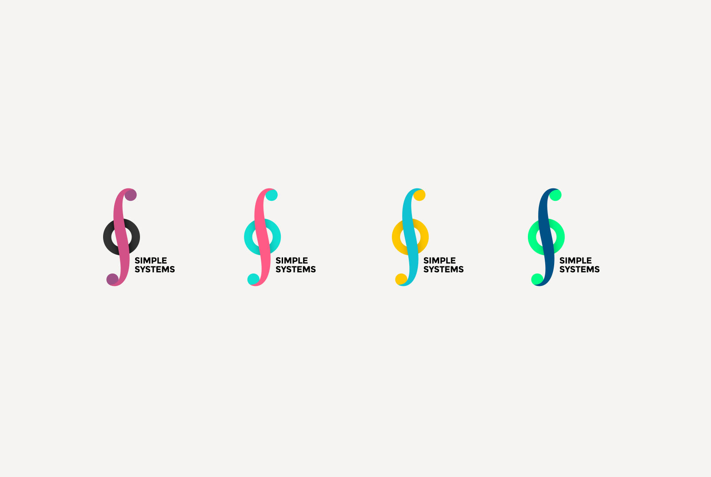
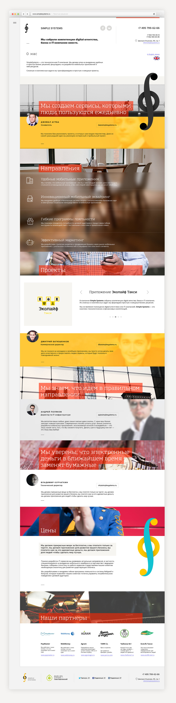

21 March 2015
Simple Systems Logo
The client announces the name—Simple System. Later, System is transformed into Systems.
Letter S—integral icon. «Simple Systems» are simple for users. But in their heart—sophisticated technological solutions.
 Several color schemes were created by request
Several color schemes were created by request

Dark background version The process
The process
 One of my favorite versions
One of my favorite versions
 Corporate business cards as a bonus to the logo
Corporate business cards as a bonus to the logo

Simple Systems Website
The task is set—make a simple and straightforward website in a short time. It was based on the principles of elegant typography: neat grid, beautiful fonts. Further, additional dynamics was added to the site using the parallax effect.
Problems solved: design, development
Terms: 1 week
Parallax Scrolling—an effect in which several background layers move at different speeds, which creates a sense of three-dimensional space.

Several trendy hairline icons
Payment Systems LLC
As part of our common projects, in all cases Sasha showed what it means to do a job well and on time. It's nice that he understands the essence of the task and clearly approaches its implementation.
Karachinsky—it's bright and fucking awesome.